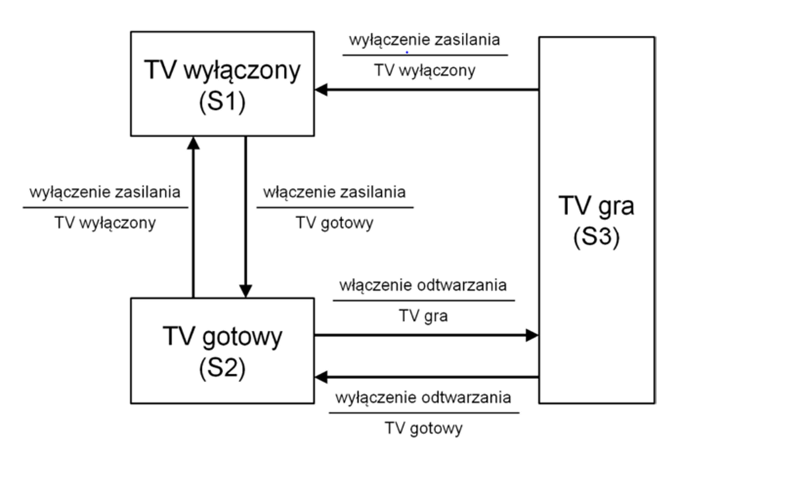
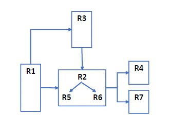

Która z poniższych odpowiedzi opisuje warunek testowy?
Która z poniższych odpowiedzi prawidłowo wyraża jeden z celów testowania?
Które z poniższych stwierdzeń poprawnie opisuje różnicę między testowaniem a debugowaniem?
Która z poniższych odpowiedzi opisujących typowe sytuacje zaistniałe podczas testowania lub eksploatacji opisuje awarię?
Pan Testerski testował aplikację mobilną przez ostatnie 5 lat. Ma on bogate doświadczenie w tego typu testach i osiąga lepsze wyniki w krótszym czasie niż inni testerzy. Przez długi czas pan Testerski nie modyfikował istniejących testów automatycznych, ani nie tworzył żadnych nowych przypadków testowych. Spowodowało to, że podczas wykonywania istniejących testów znajdowano coraz mniej defektów.
Której zasady testowania NIE przestrzegał pan Testerski?
Testowanie może być elementem zapewnienia jakości, ponieważ:
Które z poniższych działań jest częścią etapu procesu testowego „analiza testów” w procesie testowym?
Powiąż poniższe produkty pracy związanymi z testowaniem (1–4), z odpowiednimi opisami (A-D).
1. Zestaw testów.
2. Przypadek testowy.
3. Procedura testowa.
4. Karta opisu testu.
A. Grupa skryptów testowych lub harmonogram wykonania testów.
B. Zbiór instrukcji wykonujących test.
C. Wykaz oczekiwanych rezultatów.
D. Dokument opisujący cel testów i możliwe pomysły na ich wykonanie
W jakim celu można zastosować testowanie białoskrzynkowe na etapie testowania akceptacyjnego?
Które z poniższych stwierdzeń porównujących testowanie modułowe z testowaniem systemowym jest PRAWDZIWE?
Które z poniższych stwierdzeń jest zgodne z prawdą?
Która z poniższych odpowiedzi zawiera NAJLEPSZĄ definicję modelu przyrostowego?
Które z poniższych zdarzeń NIE powinno uruchamiać testowania pielęgnacyjnego?
Która z poniższych odpowiedzi przedstawia role występujące w przeglądzie formalnym?
Jakie działania są przeprowadzane w ramach planowania formalnego przeglądu?
Który z poniższych typów przeglądów NAJLEPIEJ sprawdzi się w sytuacji, w której przegląd musi zostać przeprowadzony zgodnie z formalnym procesem opartym na regułach i listach kontrolnych?
Wskaż DWA stwierdzenia dotyczące testowania statycznego, które są ZASADNICZO prawdziwe.
Jesteś zaproszony do udziału w przeglądzie opisu wewnętrznego procesu tworzenia dokumentów. Celem tego opisu jest przedstawienie podziału pracy pomiędzy osobami pełniącymi różne role i zaangażowane w proces w sposób, który będzie zrozumiały dla wszystkich. Przegląd jest oparty na następującej liście kontrolnej:
i. Czy dla każdej czynności zdefiniowano w jasny sposób osobę ją wykonującą?
ii. Czy dla każdej czynności zdefiniowano w jasny sposób kryteria wejścia?
iii. Czy dla każdej czynności zdefiniowano w jasny sposób kryteria wyjścia?
iv. Czy dla każdej czynności zdefiniowano w jasny sposób role wspierające i ich zakres odpowiedzialności?
Przeglądowi opartemu na tej liście poddawany jest następujący fragment dokumentu:
„Po sprawdzeniu kompletności i poprawności dokumentacji klienta architekt oprogramowania tworzy specyfikację systemu. Gdy architekt oprogramowania ukończy specyfikację systemu, zaprasza testerów i weryfikatorów do przeglądu. Lista kontrolna opisuje zakres przeglądu. Każdy zaproszony recenzent tworzy - w razie potrzeby - komentarze do przeglądu i kończy przegląd oficjalnym komentarzem „gotowe”.
Które z poniższych uwag z Twojej recenzji są poprawne?
Testowanie w oparciu o listę kontrolną to:
Które z poniższych technik testowania zaliczają się do kategorii technik czarnoskrzynkowych?
Rozważmy następujące stwierdzenie dotyczące pokrycia decyzji:
Gdy kod zawiera tylko pojedynczą instrukcję if i nie zawiera żadnych instrukcji pętli lub CASE, a także wykonanie instrukcji if nie jest zagnieżdżone w kodzie, każdy wykonywany test pozwoli uzyskać pokrycie decyzji na poziomie 50%.
Która z poniższych odpowiedzi jest poprawna?
Która z poniższych odpowiedzi NAJLEPIEJ opisuje pokrycie instrukcji kodu?
Które stwierdzenie dotyczące relacji między pokryciem instrukcji kodu a pokryciem decyzji jest prawdziwe?
W której z poniższych sytuacji zalecane jest testowanie eksploracyjne:
Program musi obliczyć wysokość premii dla pracownika. Premia nie może mieć wartości ujemnej, może natomiast zostać zredukowana do zera. Jej wysokość zależy od stażu pracy. Wyróżniono następujące kategorie:
Ile przypadków testowych jest niezbędnych, jeśli do przetestowania procesu obliczania wysokości premii potrzebne są tylko te zaprojektowane w oparciu o podział na klasy równoważności dla przypadków poprawnych?
System kontroli i raportowania wykroczeń drogowych posiada następującą charakterystykę: System mierzy prędkość samochodu w km/h, a odczyty podawane są jako liczby naturalne.
Do 50 km/h włącznie, nie zostanie wykonana żadna akcja.
Pomiędzy 50 km/h a 55 km/h włącznie, kierowca otrzyma ostrzeżenie.
Pomiędzy 55 km/h a 60 km/h włącznie, kierowca otrzyma mandat.
Powyżej 60 km/h, kierowcy zostanie odebrane prawo jazdy.
Które z poniższych wartości (km/h) są przypadkami testowymi do analizy wartości brzegowych, gdy sprawdzane są tylko dwie wartości brzegowe z klas równoważności.
Pracownicy firmy otrzymują premie za osiągnięcie indywidualnych celów pod warunkiem przepracowania w firmie ponad 1 rok.
Do przetestowania logiki wypłaty premii zaprojektowano następującą tablicę decyzyjną:
| T1 | T2 | T3 | T4 | ||
| Warunki | |||||
| W1 | Zatrudnienie od ponad 1 roku? | TAK | NIE | NIE | TAK |
| W2 | Cele uzgodnione? | NIE | NIE | TAK | NIE |
| W2 | Cele osiągnięte? | NIE | NIE | TAK | TAK |
| Akcja | |||||
| Wypłata premii? | NIE | NIE | NIE | TAK |
Który z poniższych przypadków testowych przedstawia sytuację, która rzeczywiście może się zdarzyć w życiu, a której brakuje w powyższej tabeli decyzyjnej?
Które z poniższych stwierdzeń dotyczących przedstawionego diagramu przejść między stanami jest PRAWDZIWE?

| Przypadek testowy | 1 | 2 | 3 | 4 | 5 |
| Stan początkowy | S1 | S2 | S2 | S3 | S3 |
| Dane wejściowe | Włączenie zasilania | Wyłączenie zasilania | Włączenie odtwarzania | Wyłączenie odtwarzania | Wyłączenie zasilania |
| Spodziewany stan końcowy | S2 | S1 | S3 | S2 | S1 |
W przypadku aplikacji do odtwarzania wideo obowiązuje następujące wymaganie: aplikacja musi umożliwiać odtwarzanie wideo na ekranach o następującej rozdzielczości:
Który z poniższych przypadków testowych jest rezultatem zastosowania technik podziału na klasy równoważności w odniesieniu do tego wymagania?
Które z poniższych stwierdzeń NAJLEPIEJ opisuje podział zadań pomiędzy kierownika testów a testera?
Która z poniższych miar jest NAJBARDZIEJ przydatna w kontekście monitorowania wykonywania testów?
Wskaż DWA czynniki, które mogą mieć wpływ na (początkowy) plan testów i być częścią tego planu.
W której z poniższych odpowiedzi wymieniono typowe kryteria wyjścia z testowania?
Który z poniższych elementów NIE jest uwzględniany w sumarycznym raporcie z testów?
W ramach projektu opracowano „inteligentny” termostat grzewczy. Algorytmy kontrolne termostatu zostały zamodelowane jako modele Matlab / Simulink i są uruchamiane na serwerze podłączonym do Internetu. Termostat wykorzystuje specyfikacje serwera do uruchomienia zaworów grzewczych.
Kierownik testów zdefiniował następującą strategię / podejście testowe w planie testów:
Jakie cztery typowe strategie / podejścia testowe zostały wdrożone przez kierownika testów w planie testów?
Który z poniższych elementów jest charakterystyczny dla szacowania testów techniką opartą na miarach?
Jako kierownik testów musisz przetestować następujące wymagania:

Notacja wskazująca ewentualne zależności logiczne między wymaganiami ma postać na przykład „R1 -> R3”, co oznacza, że wymaganie R3 zależy od wymagania R1.
Która z poniższych odpowiedzi pozwala ustalić harmonogram wykonywania testów zgodnie z zależnościami między wymaganiami?
Testujesz nową wersję oprogramowania do ekspresu do kawy. Urządzenie może parzyć różne rodzaje kawy w oparciu o cztery różne parametry: wielkość napoju, ilość cukru, dodatek mleka i rodzaj syropu. Kryteria są następujące:
Sporządzasz raport o defekcie zawierający następujące informacje:
Jaką cenną informację pominięto w powyższym zgłoszeniu defektu?
Która z poniższych korzyści może NAJPRAWDOPODOBNIEJ wynikać z automatyzacji testowania?
Które z poniższych narzędzi testowych jest bardziej odpowiednie dla programistów niż dla testerów?